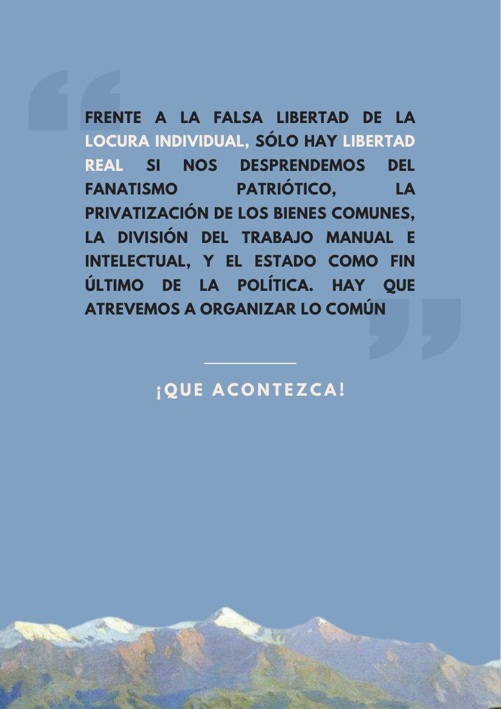

Las 176 medidas: lo que el mercado no va a decidir por Cuba
«Frente a las 176 medidas aprobadas por el gobierno cubano en junio de 2026, buena parte del debate público se organiza en torno a un falso dilema.»
Página de síntesis · Escala
La misma discusión, otras trincheras: los cuatro principios y los puntos reales leídos en el continente.
El Correo centraliza y ordena la discusión latinoamericana a partir de los acontecimientos comunistas: lo que se juega hoy en Cuba, la defensa del dólar como última línea imperial, las voces borradas de Gaza, la unidad de los pueblos contra la agresión. No se trata de un noticiario regional: es la misma centralización de la discusión, leída en la escala de las luchas del continente.
Las fuentes de esta escala están fichadas, con su licencia, en el directorio de fuentes: Jacobin América Latina, Huella del Sur (Argentina), Contracorriente (Colombia), Desinformémonos (México), Rebelión (internacional).

«Frente a las 176 medidas aprobadas por el gobierno cubano en junio de 2026, buena parte del debate público se organiza en torno a un falso dilema.»
««El dominio del dólar es esencial», declaró el secretario del Tesoro, Scott Bessent…»
«Contra el imperialismo y la agresión trumpista, insistimos en la unidad de los pueblos latinoamericanos.»
«Un informe de 7amleh y la Universidad de Utrecht documenta 3.520 casos de restricciones a contenidos palestinos entre 2021 y 2025.»
«La propuesta de Ley representa un contrasentido ya que no se aleja de visiones que tutelan la libre determinación, la autonomía, el territorio, la consulta y el consentimiento indígena.»